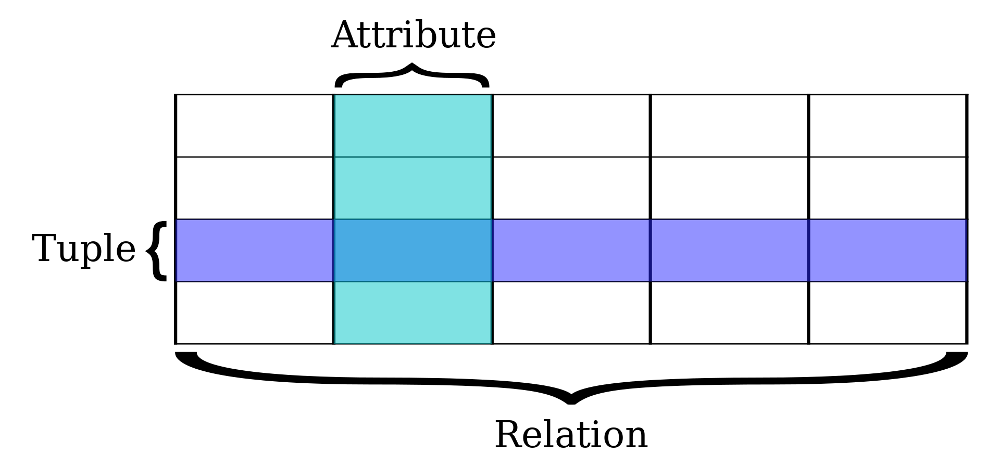
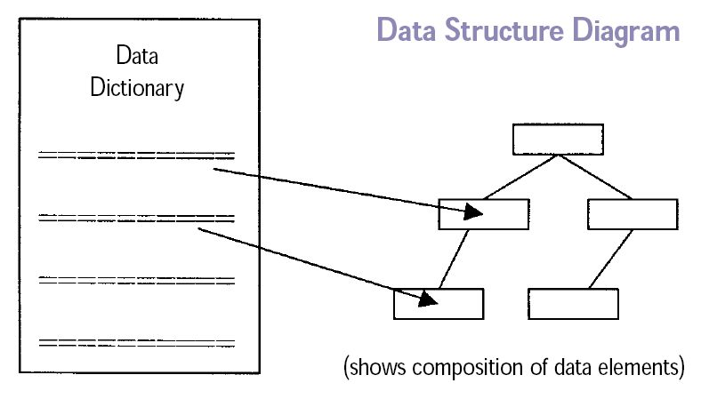
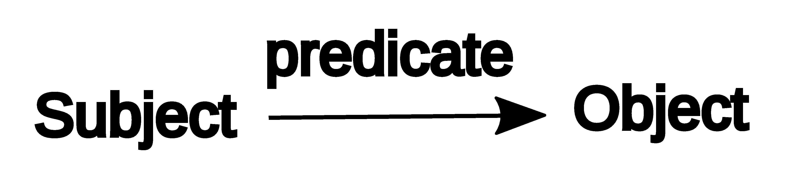
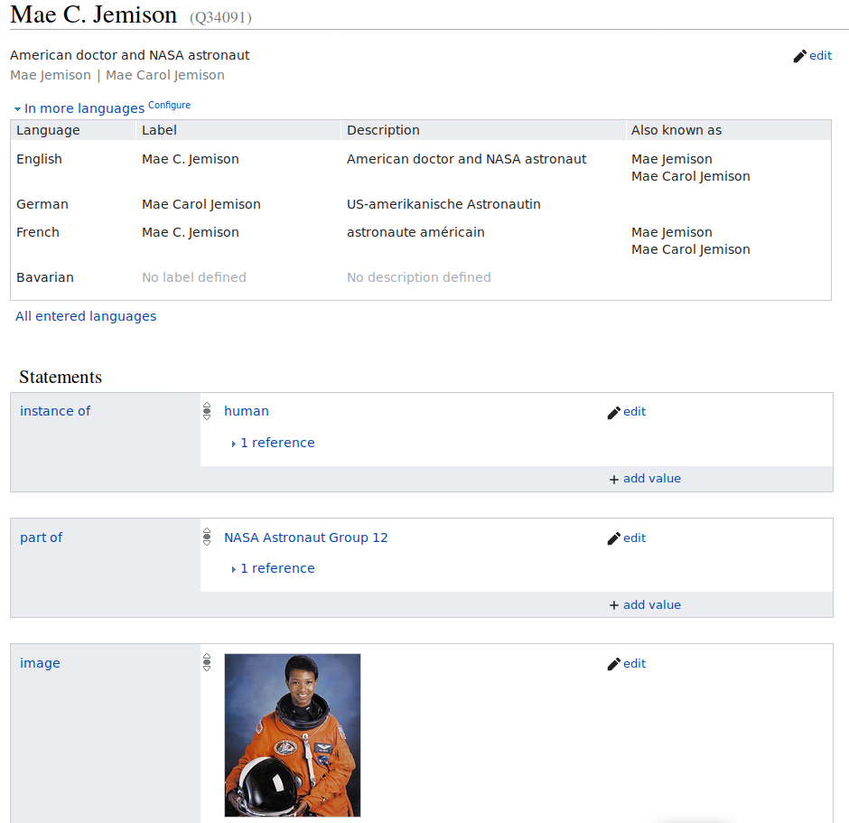

Underlying concepts of Wikidata
Last updated on 2026-04-17 | Edit this page
Estimated time: 20 minutes
Overview
Questions
- What is a RDF triple?
- What are the underlying components of RDF?
- What tools and services are built on top of Wikidata?
Objectives
- Know what a triple is, and relate structure of a Wikidata statement to traditional metadata field structure.
- Know how linked data can create more context for patrons/users in library catalogs.
- Know how linked data can improve recall in library catalogs.
- Be aware of tools and services built on top of Wikidata, such as Scholia and InteractOA.
2.1 Conceptual foundations: ways of storing data
There are many types of database structures and systems. Two common database types are relational databases and graph databases. Understanding the commonalities and differencews between these structures helps to explain the uniqueness of Wikidata’s data structure.
2.1.1 Relational databases
A relational database is a set of formally described related tables from which data can be accessed or reassembled. This model organizes data into one or more tables (or “relations”) of columns and rows, with a unique key identifying each row. each table/relation represents one “entity type” and these entities are connected via constrained relationships. This model is fully structured and mostly uses SQL (Structured Query Language) to retrive and manuplate data.
A single database table and its basic parts is demonstrated below. Note that each row is a set of ordered values that corresponds to a single data element. Each column in the table may be understood as an attribute, which is a common attribute, but for which each row has the data corresponding to that record. Together, the entire table consitutes a data element that can be related to other other tables.

2.1.2 Graph / Semantic databases
Semantic web is an extension of the World Wide Web standards, which promote common formats and exchange protocols on the Web. For data exchange, the fundamental Web standard is the Resource Description Framework, or RDF. Rather than being defined by tables, this “graph” or semantic structure is defined by relationship statements. RDF outlines a protocol for encoding and transmitting graph data on the web.
RDF can be queried and analyzes using a language called SPARQL (Simple Protocol and RDF Query Language). This has its own syntax, but it is similar to how relational databases use SQL (Structured Query Language) to create and build queries. In SQL relational database terms, RDF data can also be processed as a table, but with only three columns – the subject column, the predicate column, and the object column.

2.2 Conceptual foundations: RDF and Triples
The RDF defines a conceptual data model that is based on the idea of making statements about resources. Unlike a relational database, the data model defined by RDF is text-focused, and it is based on relating defined entities (as Wikidata calls them, items) that can be referred to by a Internationalized Resource Identifier (an IRI, which is nearly synonymous with a URL), and which can be connected or related to any other defined entity through a standard language. While the data structures can be complex, they rely on a basic structure called a triple, which consists of a subject and an object, which are linked together, or related, by a defined relationship called a predicate (as Wikidata calls it, a property). Here youcan read Wikipedia’s definition of a semantic triple.

The basic data statement is expressed in the form subject–predicate–object, also known as a triple. The subject denotes the resource. In Wikidata, each item, or Q node, is a triple subject. The object is usually another data entity, though it may also be a standalone value, which is related to the subject by the predicate relator. The predicate denotes traits or aspects of the resource, and expresses a relationship between the subject and the object, for example:
- The British Library is-a library
- John is-a person
- John born-in 1980
- John has-occupation engineer
Each of the above is a triple about the subject “John,” wither different predicates and objects.
As you can imagine, Wikidata has a huge number of data items (subjects), and it includes millions and millions of triple statements. RDF data are stores are also known as triplestores.
2.3 Wikidata concepts
- Items
-
Items represents things and conceps, including people, places, events,
subjects, and more. Examples mentioned previously include the British
Library or Douglas Adams. Wikidata items have identifiers that start
with letter “Q”, like
Q42for Douglas Adams.
Each item must have a label in one or more languages, optionally have alternative names and descrition. - Properties
- Properties represents attributes of the subject such occupation and have identifiers that starts with letter “P” like: P106 for Occupation.
- Claims
-
Claims are the triple statements, which combine the formation of Item
and Property and value. For example:
Douglas Adams (Q42) - occupation (P106) - comedian (Q245068). Note: value can be already stored in wikidata, therefore the bot assigns the Q number of the value instead. - Statement
- A Claim is a part of a statement, a statement also includes: References, Ranks, and Qualifiers.
- References
- Used to store the source of the claim, using properties, such stated in, qoute, and etc.
- Ranks
- A useful component to deprecate outdated claims.
- Qualifiers
- Qualifiers are basically properties but on claims rather than items.
Can you identify triple structures in library data?
Is data stored in the RDF triple format part of your work as a librarian? Take some time to think about if data stored in the RDF triple format is part of your work as a librarian. Can you give an example in the format of an RDF triple?
Point out one RDF triple on the Wikidata item page of former astronaut Mae Jemison.
Got to the Wikidata page of Mae Jemison and point out one RDF triple. An RDF triple consists of a subject, a predicate and an object. Can you assign the three corresponding Wikidata terms?
Go to Wikidata and either search for “Mae Jemison” or enter the ID Q34091. In the picture below the statement “Mae C. Jemison - part of - NASA Astronaut Group 12” is an RDF triple.

Screenshot of Wikidata Main Page
2.4 Tools and services using Wikidata
Wikidata’s open data can be used and reused by anyone. A number of tools and services have been built on top of Wikidata’s database, demonstrating its value as a linked open data resource.
The Linked Open Data Cloud
Wikidata is part of a much larger ecosystem of linked open datasets. The Linked Open Data Cloud visualizes the connections between hundreds of open datasets on the web. Note that this visualization is updated regularly.

Scholia
Scholia is a tool built on top of Wikidata that visualizes scholarly profiles and research outputs. It has no own database but queries Wikidata directly, which means any addition to Wikidata is immediately reflected in Scholia. It is particularly useful for librarians working with research information.
Explore a Wikidata item and its Scholia profile
Part 1: Wikidata item
Go to the Wikidata page of Donna Haraway (Q253407), a feminist scholar and philosopher of science.
- What statements can you find?
- What identifiers are listed?
- What links to other Wiki projects do you see?
Part 2: Scholia profile
Now go to the Scholia profile of Alex Bateman (Q18921408), a bioinformatician with many publications in Wikidata.
- How many publications are listed per year?
- What topics does his research cover?
- Who are his most frequent co-authors?
- Can you find the academic tree and citation statistics?
InteractOA
InteractOA is another example of a web service built on top of Wikidata. It visualizes genomic RNA interaction networks based on data stored in Wikidata, linked directly to the open-access articles that describe the evidence for these interactions. It demonstrates that Wikidata can serve as a sustainable, open database for specialized scientific knowledge.
- Triples are the basic data structure of graph databases, and they are the conceptual structure of Wikidata statements.
- Wikidata items are denoted by a human-readable label and a short description, and a unique identifier that begins with a Q. These items are the subjects of linked Wikidata statements.
- Wikidata defines relationships between items, also known as triple predicates, with Wikidata properties.
- Wikidata statements can capture library information, such as relationships like creatorship, publication, aboutness, and more.
- Wikidata is part of a larger Linked Open Data ecosystem, and its data can be reused to build tools and services such as Scholia, InteractOA, and others.